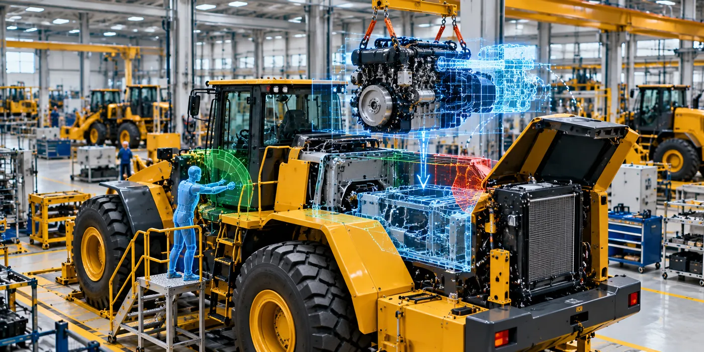

The Assignment
A North American construction equipment OEM required virtual validation of its assembly processes before physical production.
The objective was to evaluate the manufacturability and serviceability of the equipment while validating tooling, assembly sequences, operator access and ergonomics. The programme also needed to assess critical operations such as engine installation and removal, crane access and the interaction between the product and the manufacturing facility.
Our Approach
CS TECH Ai used virtual manufacturing and digital validation methods to evaluate the product, tooling and assembly environment together before physical execution.
The engagement included:
- Creation and validation of the Manufacturing Bill of Materials (MBOM)
- Virtual review of assembly operations
- Tooling validation
- Manufacturability and production-feasibility assessment
- Ergonomic validation of assembly activities
- Serviceability assessment
- Validation and updating of field assembly sequences
- Detailed virtual-build validation
- Engine removal studies
- Engine landing and installation studies
- Facility and product integrated validation
- Validation of crane access for assembly operations
- Assessment of operator visibility, reach and accessibility
- Validation of specific safety criteria associated with assembly operations
The virtual-build environment enabled engineering teams to assess how the equipment, tooling, operators and manufacturing facility would interact before issues reached physical assembly.
Key Findings
The virtual review identified more than 100 engineering and tooling issues.
Detailed validation also resulted in recommendations for design changes based on the engine landing study, demonstrating how virtual manufacturing could identify product and process concerns before physical implementation.